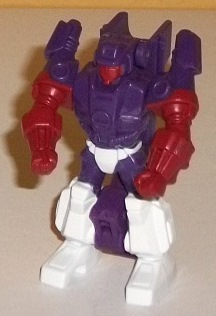
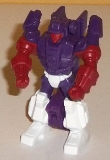
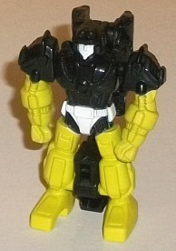
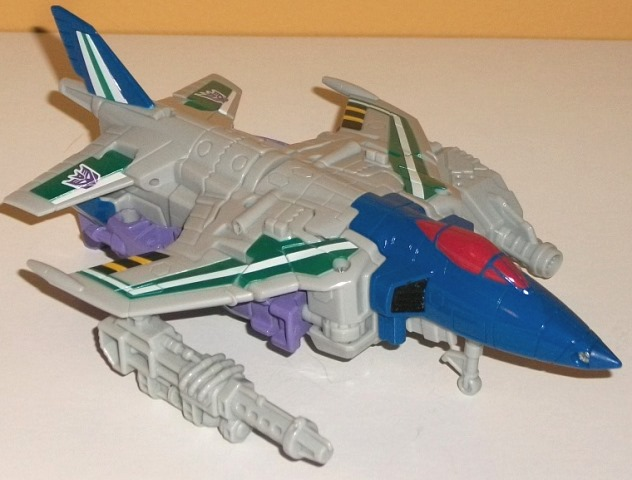
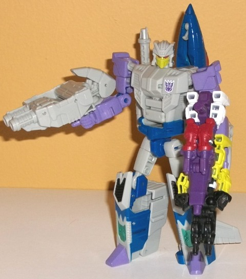

Difficulty of Transformation : Very Easy
Color Scheme : Dark purple and some white and dark dull red
Individual Rating : 5.9
Allegiances : Decepticon
(NOTE: Because this set consists of repaints,
this is not a full-blown review. This mainly covers any changes made to
the set and the color schemes. For a review of Combiner Wars Firefly--
the mold used for Needlenose-- look
here
.
For a review Caliburst & Holepunch-- the molds used for Sunbeam &
Zputty-- read the review of Generations Scoop w/ Caliburst & Holepunch
here
.)
 Sunbeam
Sunbeam

Difficulty of Transformation
: Very
Easy
Color Scheme
: Dark purple and some
white and dark dull red
Individual Rating
: 5.9
Okay, so let me get this
straight. Sunbeam is... NOT the Targetmaster that's yellow? Oh... kay.
Granted, FunPub is just sticking with G1 in this respect, but it's still
a baffling name given the colors of Needlenose's other Targetmaster. For
Sunbeam, no, he's mostly dark, with his base color being a dark purple.
On his lower arms and face he's a dark red, which goes okay with the purple,
but a lighter color would've worked a bit better, I think. No, the really
nice accent color is white, used on the waist and legs of the robot mode.
The white just contrasts extremely well with the dark purple, and really
helps make the color scheme and keeps it from being dull. I honestly wish
a bit more of white was used, particularly in gun mode.
No mold changes have
been made to Sunbeam.
 Zputty
Zputty

Difficulty of Transformation
: Very
Easy
Color Scheme
: Black, bright chalky
yellow, and some white
Individual Rating
: 5.7
Zputty's the one who
should be called Sunbeam but isn't. ("Zputty", by the way, is the copyright-friendly
name for the Targetmaster that was called "Zigzag" in G1.) His base plastic
color is your basic black, but what really makes him stand out are that
his entire appendages are colored (back and front-- even in the little
"hollow" bits on the back) a BRIGHT yellow. Like, safety-colored, albeit
a bit more "sunny" then strictly safety yellow. It'd be a bit obnoxious
if he was a larger toy, honestly, even if it's fairly G1-accurate. The
white on the waist and face help add in a bit more variety to the color
scheme, but mostly it's just that black and yellow, love it or hate it.
No mold changes have
been made to Zputty.
 Needlenose
Needlenose


Size
: Deluxe
Difficulty of Transformation to Robot
:
Easy
Difficulty of Transformation to Leg
:
Very Easy
Difficulty of Transformation to Arm
:
Very Easy
Color Scheme
: Light gray, dark glossy
blue, and some moderately light glossy purple, metallic forest, green,
white, pale yellow, moderately light red, black, and orangish "cheesy"
yellow
Individual Rating
: 8.7
Needlenose is a relative
rarity nowadays-- a non-Pretender, non-Micromaster G1 character that hasn't
gotten an update since his original toy. The color scheme on this Combiner
Wars version of him is made pretty much as close to the original as the
plastic colors breakup allows. His main color is, unfortunately, light
gray, which is a fairly bland color-- but on the positive side, it's not
milky and more just a straight gray, so it looks more "solid" than any
milky color. Generally, though, except for the chest area in robot mode,
Needlenose has enough paint apps to keep him from looking too one-tone
on any large area of the toy. In vehicle mode he has nice white-and-metallic
green stripes on his wings, with the metallic green in particular looking
really nice against the white and gray, with a nice "foresty" shade to
the green. On the main wings the stripes are a bit "crammed in there",
due to the mold's wings not being nearly as large proportionally as G1
Needlenose's, but it's a small caveat. There's also some black-and-yellow
"safety" stripes along the back end of the main wings, and blue surrounding
his tailfin. I'm not all that crazy about the former-- again, it looks
cramped-- but the blue goes well with both the green and the white. The
nosecone is also painted solid dark blue, with a contrasting red used for
the cockpit windows (and for Needlenose's eyes in robot mode). Speaking
of the robot mode, he also has some pretty nifty paint apps there-- my
favorite of which are the dark blue, pale yellow, and metallic green on
the lower legs that loosely approximate his details from his G1 toy (honestly,
it's surprising how close they are, given that this mold was certainly
not made with Needlenose in mind). The colors, again, go great together.
There's also a really nice "Decepticon-y" shade of light purple used on
the toes and the entire arms, and it goes well with the gray. To finish
things off, there's black on his kneecaps, dark blue paint around his waist,
and pale yellow on his faceplate-- overall, quite a lot of paint. I will
say that the yellow shouldn't have been quite so pale, though-- a stronger
yellow would've worked better against the gray face and red eyes.
No mold changes have
been made to Needlenose when compared to CW Firefly, and yet the mold still
works perfectly for Needlenose, headsculpt and all. That said, this mold
has seen enough reuses by this point that some of the joints are a little
loose, the hips in particular. It's nothing that can't be fixed with a
little floor/nail polish, but it is worth mentioning.
TFSS 4.0 Needlenose is
a surprisingly good update to the G1 character, considering that no mold
changes were made. Although his base color is a fairly bland gray, he's
got lots of paint apps that not only pay close homage to his G1 toy, but
just look pretty darned good as well and are nice shades. His Targetmasters
are nice little extras, too, although they're certainly not what I'd consider
the highlight of this trio. This is my least favorite figure from the fourth
Subscription Service, but this speaks more to the strength of the rest
of the figures than to any real weakness on Needlenose's part.
Reviews by Beastbot